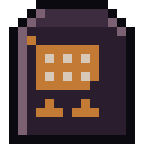

Guides / 02

Looting
From the door or inside, furniture, noise, backpack and the stock that returns every week.
The supermarkets, pharmacies, police stations, gas stations, schools, shops and houses of your neighborhood are in the game. Each kind of place has its own finds and its own dangers.
Through the door or going in
Once you are within 35 m of a place (houses: right up against them), tap Loot. You choose:
- Through the door: fast, only the furniture by the entrance, and no rare items.
- Enter: opens the action screen inside the building. More furniture, more chance of rares, and more zombies. Buildings can have floors (GO UP / GO DOWN).
If you move more than 20 m away in the middle of looting, it is interrupted.
Furniture and noise
Each piece of furniture has a time to rummage and a noise level: silent, moderate noise or loud noise. A drawer takes 1 s; a cash register, 2.5 s and makes noise; a locked armory, 5 s and a lot of noise. Stay still while you rummage and tap Take all at the end.
- Sometimes the furniture is empty.
- Rummaging through glass and tin can cut your hand (shard).
- Locked doors open with a crowbar (3 s, with noise) or when a zombie inside breaks the door down.
Restocked every week
A looted place stays marked as "already looted" for 7 days; then it fills up again. The stock is the same for everyone: if "Another survivor took it first" appears, someone got there before you.
Bodies
Downed zombies stay on the ground for 2 hours. Each fight becomes a pile of bodies: Search all goes through all of them at once. Bodies carry things from their pockets, cloth and, sometimes, stamps. Uniformed zombies (police, firefighter, doctor…) carry what they used in life, and sometimes the whole uniform.
Backpack and weight
How much you carry is the sum of your clothing pockets and your backpack:
- Body pockets: 4 kg, plus the pockets of pants, vests, fanny pack and thigh pouch.
- Backpacks: school 6 kg, gym bag 5, daypack 10, tactical 12, expedition pack 16.
- Strength, Organized and Disorganized change that limit.
Above the limit, Heavy load appears: you are slower in combat and noisier on the map.
The belt has 2 slots for what you need in hand fast (a 3rd with a tactical vest or tactical backpack). Long weapons go on your back.
Military bunkers
Every month, some squares become bunkers with 3 to 6 floors going down, each darker and more dangerous, and each with better loot. Every floor starts in a safe room, where zombies cannot enter. A floor's generator turns on the light with 1 biodiesel. The vault door at the far end opens with the access card, or with a crowbar in 60 s and a lot of noise. The bunker restocks the following month.
Guias / 02
Saque
Pela porta ou entrando, móveis, barulho, mochila e o estoque que volta toda semana.
Mercados, farmácias, delegacias, postos, escolas, lojas e casas do seu bairro estão no jogo. Cada tipo de lugar tem os seus achados e os seus perigos.
Pela porta ou entrando
Chegando a até 35 m de um lugar (casas: encostado nelas), toque em Saquear. Você escolhe:
- Pela porta: rápido, só os móveis da entrada e sem itens raros.
- Entrar: abre a tela de ação dentro do prédio. Mais móveis, mais chance de raro e mais zumbis. Prédios podem ter andares (SUBIR / DESCER).
Se você se afastar mais de 20 m no meio do saque, ele é interrompido.
Móveis e barulho
Cada móvel tem um tempo para vasculhar e um nível de barulho: silencioso, barulho médio ou barulho alto. Uma gaveta leva 1 s; um caixa registradora, 2,5 s e faz barulho; um arsenal trancado, 5 s e muito barulho. Fique parado enquanto vasculha e toque em Pegar tudo no fim.
- Às vezes o móvel está vazio.
- Vasculhar vidro e lata pode cortar a mão (estilhaço).
- Portas trancadas abrem com pé de cabra (3 s, com barulho) ou quando um zumbi lá dentro quebra a porta.
Estoque toda semana
Um lugar saqueado fica marcado como "já saqueado" por 7 dias; depois ele enche de novo. O estoque é o mesmo para todos: se aparecer "Outro sobrevivente pegou antes", alguém chegou primeiro.
Corpos
Zumbis abatidos ficam no chão por 2 horas. Cada luta vira uma pilha de corpos: Revistar todos passa por todos de uma vez. Corpos trazem coisas do bolso, panos e, às vezes, selos. Zumbis de uniforme (polícia, bombeiro, médico…) carregam o que usavam em vida, e às vezes o uniforme inteiro.
Mochila e peso
O quanto você carrega é a soma dos bolsos das roupas e da mochila:
- Bolsos do corpo: 4 kg, mais os bolsos de calças, coletes, pochete e bolsa de coxa.
- Mochilas: escolar 6 kg, academia 5, caminhada 10, tática 12, cargueira 16.
- Força, Organizado e Desorganizado mudam esse limite.
Acima do limite aparece Carga pesada: você fica mais lento na luta e mais barulhento no mapa.
O cinto tem 2 vagas para o que você precisa na mão rápido (a 3ª com colete tático ou mochila tática). Armas longas vão nas costas.
Bunkers militares
Todo mês, algumas praças viram bunkers com 3 a 6 andares para baixo, cada vez mais escuros e mais perigosos, e com saque cada vez melhor. Cada andar começa numa sala segura, onde os zumbis não entram. O gerador de um andar acende a luz com 1 biodiesel. A porta-cofre do fundo abre com o cartão de acesso, ou com pé de cabra em 60 s e muito barulho. O bunker reabastece no mês seguinte.
Guías / 02
Saqueo
Desde la puerta o entrando, muebles, ruido, mochila y el stock que vuelve cada semana.
Los mercados, farmacias, comisarías, gasolineras, escuelas, tiendas y casas de tu barrio están en el juego. Cada tipo de lugar tiene sus hallazgos y sus peligros.
Por la puerta o entrando
A menos de 35 m de un lugar (casas: pegado a ellas), toca Saquear. Eliges:
- Por la puerta: rápido, solo los muebles de la entrada y sin objetos raros.
- Entrar: abre la pantalla de acción dentro del edificio. Más muebles, más probabilidad de algo raro y más zombis. Los edificios pueden tener pisos (SUBIR / BAJAR).
Si te alejas más de 20 m en medio del saqueo, se interrumpe.
Muebles y ruido
Cada mueble tiene un tiempo para registrarlo y un nivel de ruido: silencioso, ruido moderado o ruido fuerte. Un cajón tarda 1 s; una caja registradora, 2,5 s y hace ruido; un arsenal cerrado, 5 s y mucho ruido. Quédate quieto mientras registras y toca Tomar todo al final.
- A veces el mueble está vacío.
- Registrar vidrio y latas puede cortarte la mano (esquirla).
- Las puertas cerradas se abren con palanca (3 s, con ruido) o cuando un zombi de adentro rompe la puerta.
Reabastecimiento cada semana
Un lugar saqueado queda marcado como "ya saqueado" durante 7 días; después se llena de nuevo. Las existencias son las mismas para todos: si aparece "Otro sobreviviente lo tomó antes", alguien llegó primero.
Cuerpos
Los zombis abatidos quedan en el suelo durante 2 horas. Cada pelea deja una pila de cuerpos: Registrar todos los revisa todos de una vez. Los cuerpos traen cosas de los bolsillos, trapos y, a veces, sellos. Los zombis de uniforme (policía, bombero, médico…) llevan lo que usaban en vida, y a veces el uniforme entero.
Mochila y peso
Lo que puedes cargar es la suma de los bolsillos de la ropa y de la mochila:
- Bolsillos del cuerpo: 4 kg, más los bolsillos de pantalones, chalecos, riñonera y bolsa de muslo.
- Mochilas: escolar 6 kg, de gimnasio 5, de senderismo 10, táctica 12, de expedición 16.
- Fuerza, Organizado y Desorganizado cambian ese límite.
Por encima del límite aparece Carga pesada: eres más lento en la pelea y más ruidoso en el mapa.
El cinturón tiene 2 espacios para lo que necesitas a mano rápido (el 3.º con chaleco táctico o mochila táctica). Las armas largas van en la espalda.
Búnkeres militares
Cada mes, algunas plazas se vuelven búnkeres con 3 a 6 pisos hacia abajo, cada vez más oscuros y más peligrosos, y con un botín cada vez mejor. Cada piso empieza en una sala segura, donde los zombis no entran. El generador de un piso enciende la luz con 1 biodiésel. La puerta del cofre del fondo se abre con la tarjeta de acceso, o con palanca en 60 s y mucho ruido. El búnker se reabastece al mes siguiente.